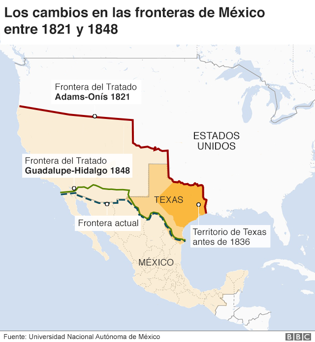

Descubre el mundo con "Tiempo y Pasado" Y viaja a los inicios
El pasado es historia, el futuro es un misterio, pero el presente es un regalo. Aprende del pasado para construir un mejor futuro.
Constitucion de 1824
La Constitución de 1824 fue redactada en un momento en que México estaba experimentando una gran agitación política. El país acababa de obtener su independencia de España y estaba tratando de encontrar una forma de gobierno que pudiera funcionar de manera efectiva. La Constitución de 1824 se basó en gran medida en la Constitución de Cádiz de 1812, que había establecido una monarquía constitucional en España. La Constitución de 1824 estableció una forma de gobierno federal, en la que el poder estaba dividido entre el gobierno federal y los gobiernos estatales. También se establecieron tres ramas de gobierno: ejecutiva, legislativa y judicial. El presidente era el jefe de estado y de gobierno y era elegido por un colegio electoral compuesto por representantes de los estados. La legislatura federal estaba compuesta por dos cámaras: el Senado y la Cámara de Diputados. La Constitución de 1824 también incluyó una serie de derechos y libertades, como la libertad de expresión, la libertad de prensa y la libertad de culto. También se estableció que todos los ciudadanos eran iguales ante la ley y que el castigo debía ser proporcional al delito cometido. A pesar de que la Constitución de 1824 estableció un gobierno federal y una serie de derechos y libertades, no pudo evitar la inestabilidad política en México. En los años siguientes a su promulgación, hubo numerosos intentos de golpe de estado y luchas por el poder. En 1835, el presidente Antonio López de Santa Anna abolió la Constitución de 1824 y estableció un gobierno centralizado.
Constitucion de 1836
La Constitución de 1836 se redactó en un momento en que México estaba experimentando una gran inestabilidad política y económica. Texas, que formaba parte de México, había declarado su independencia y estaba en guerra con México. En medio de esta crisis, los líderes mexicanos se reunieron en la ciudad de San Luis Potosí para redactar una nueva constitución. La Constitución de 1836 estableció una forma de gobierno centralizado en la que el poder estaba concentrado en el presidente. El presidente era elegido por un período de cuatro años y tenía un gran poder sobre el gobierno y el ejército. También se estableció una legislatura bicameral, compuesta por un senado y una cámara de diputados. La Constitución de 1836 incluyó una serie de derechos y libertades, como la libertad de expresión y la libertad de religión. Sin embargo, algunos de estos derechos fueron limitados. Por ejemplo, la libertad de prensa estaba sujeta a la censura gubernamental y la libertad de religión estaba limitada a la práctica de la religión católica. La Constitución de 1836 también estableció la figura del "prefecto" como la autoridad civil y militar más importante en cada estado. Estos prefectos eran nombrados directamente por el presidente y tenían un gran poder sobre los gobiernos estatales, lo que llevó a una mayor centralización del poder en México. A pesar de que la Constitución de 1836 fue diseñada para restaurar la estabilidad política en México, tuvo poco éxito. En 1846, Estados Unidos declaró la guerra a México, lo que llevó a la pérdida de gran parte del territorio mexicano. Además, la Constitución de 1836 no logró abordar los problemas económicos y sociales que enfrentaba el país, lo que llevó a un mayor descontento popular.
Tanto la Constitución de 1824 como la Constitución de 1836 jugaron un papel importante en la historia de México. La Constitución de 1824 estableció un gobierno federal y una serie de derechos y libertades, pero no pudo evitar la inestabilidad política en el país. La Constitución de 1836 buscó restaurar la estabilidad política en México, pero no logró abordar los problemas económicos y sociales que enfrentaba el país. En última instancia, la Constitución de 1857 se convirtió en la carta fundamental más duradera y significativa en la historia de México. La Constitución de 1857 estableció una forma de gobierno federal y una serie de derechos y libertades más amplios que las constituciones anteriores. Además, la Constitución de 1857 abordó algunos de los problemas económicos y sociales que enfrentaba México, lo que llevó a una mayor estabilidad y progreso en el país. En resumen, la Constitución de 1824 y la Constitución de 1836 fueron importantes en la historia de México, pero su impacto fue limitado. Fue la Constitución de 1857 la que estableció las bases para un México más estable y próspero en el futuro.
Constitucion 1857
La Constitución de 1857 es una de las leyes fundamentales más importantes en la historia de México. Fue promulgada durante la presidencia de Ignacio Comonfort en un momento crucial de la historia del país, ya que se encontraba en medio de una profunda crisis política y social. La Constitución de 1857 estableció un marco legal para una nación que estaba en proceso de transformación, y ha sido considerada como una de las primeras constituciones liberales de América Latina. La Constitución de 1857 fue el resultado de varios años de lucha y debate. Desde el inicio de la Guerra de Reforma en 1857, los liberales mexicanos habían estado trabajando para crear una nueva Constitución que reflejara sus ideales. La Guerra de Reforma fue una lucha entre los liberales y los conservadores, que se oponían a las reformas impulsadas por el gobierno liberal de Benito Juárez. La Constitución de 1857 reflejó las ideas liberales de la época. Estableció la separación de poderes entre el Ejecutivo, el Legislativo y el Judicial. También estableció la libertad de culto, la libertad de expresión, la libertad de prensa y la abolición de la esclavitud. La Constitución también estableció los derechos y obligaciones de los ciudadanos, incluyendo el derecho al voto y la igualdad ante la ley. La Constitución de 1857 también abordó temas económicos y sociales. Estableció la propiedad privada, pero también afirmó que la propiedad debe cumplir con una función social. También estableció que los trabajadores tenían derecho a organizarse en sindicatos y a hacer huelgas. Además, la Constitución estableció que el gobierno tenía la responsabilidad de proporcionar educación pública gratuita y obligatoria. La Constitución de 1857 no fue bien recibida por todos. Los conservadores se opusieron a muchas de las reformas que establecía, y algunos incluso se rebelaron contra el gobierno de Juárez en un intento por derrocar la Constitución. La Iglesia Católica también se opuso a la Constitución, especialmente a la libertad de culto, y se negó a acatarla. A pesar de las oposiciones, la Constitución de 1857 tuvo un gran impacto en la historia de México. La Constitución se convirtió en la ley fundamental de la nación y estableció un marco legal que ayudó a modernizar al país. La Constitución también estableció un precedente para las constituciones futuras en América Latina. La Constitución de 1857 también tuvo un impacto en la historia de Estados Unidos. Durante la Guerra Civil estadounidense, el presidente Abraham Lincoln y los republicanos apoyaron a Juárez y su gobierno liberal en su lucha contra los conservadores y la Iglesia Católica. Lincoln consideró que el gobierno de Juárez era un ejemplo para la causa abolicionista y el avance de la democracia en todo el mundo. La Constitución de 1857 también influyó en el pensamiento político y social de América Latina en general. La Constitución estableció un marco legal que se basaba en la igualdad, la libertad y la justicia social, y se convirtió en un modelo para los movimientos sociales y políticos que surgieron en la región en las décadas siguientes.A pesar de la importancia histórica de la Constitución de 1857, su implementación no fue fácil. El gobierno de Juárez tuvo que enfrentar la oposición de los conservadores y la Iglesia Católica, y tuvo que luchar contra la intervención extranjera de Francia y otros países europeos. La Constitución también fue modificada varias veces a lo largo de los años, en un intento por adaptarla a las necesidades y cambios del país. Hoy en día, la Constitución de 1857 sigue siendo una ley fundamental en México. Ha sido modificada varias veces a lo largo de los años, pero muchos de sus principios fundamentales siguen vigentes. La Constitución sigue siendo un recordatorio de los ideales liberales y democráticos que han guiado la historia de México y América Latina. En conclusión, la Constitución de 1857 fue un hito en la historia de México y América Latina. Estableció un marco legal basado en los principios de la igualdad, la libertad y la justicia social, y se convirtió en un modelo para los movimientos sociales y políticos en la región. A pesar de las dificultades que enfrentó en su implementación, la Constitución sigue siendo un recordatorio de los ideales y valores que han guiado la historia de México y América Latina a lo largo de los años.
Derechos y Libertades
Durante el siglo XIX, México experimentó un cambio importante en su forma de gobierno y en los derechos y libertades de sus ciudadanos. Tres de las constituciones más importantes de este período son la Constitución de 1824, la Constitución de 1836 y la Constitución de 1857. La Constitución de 1824 fue la primera constitución de México como país independiente y estuvo vigente hasta 1836. Esta constitución estableció la división de poderes entre el ejecutivo, legislativo y judicial, y reconoció la religión católica como la única religión del estado. También garantizó la libertad de culto, de imprenta y de asociación, así como el derecho a la propiedad privada y la igualdad ante la ley. En 1836, México promulgó la Constitución de 1836, que fue una reacción conservadora a la Constitución de 1824. Esta nueva constitución dio más poder al presidente y estableció un sistema de gobierno centralizado. Además, limitó la libertad de prensa y la libertad de asociación, y negó la ciudadanía a los mexicanos de origen extranjero. Finalmente, en 1857, México promulgó la Constitución de 1857, que fue una respuesta a la creciente demanda de libertades civiles y políticas por parte de los ciudadanos. Esta constitución estableció la libertad de expresión, la libertad de reunión, la libertad de asociación y la libertad de culto. También reconoció la igualdad ante la ley, la abolición de la esclavitud y el derecho a la educación. Sin embargo, la Constitución de 1857 no fue bien recibida por todos los sectores de la sociedad. La Iglesia Católica y los terratenientes se opusieron a la separación de la iglesia y el estado y a la abolición de los fueros, lo que llevó a la Guerra de Reforma. En conclusión, las constituciones de 1824, 1836 y 1857 marcaron una evolución importante en los derechos y libertades de los ciudadanos mexicanos. Aunque cada constitución tuvo sus limitaciones y controversias, sentaron las bases para el desarrollo de un estado democrático y justo.
Extra
La pérdida de territorio mexicano en el siglo XIX fue uno de los eventos más significativos en la historia del país. Durante este periodo, México perdió más de la mitad de su territorio a manos de Estados Unidos, lo que tuvo un impacto duradero en la política, economía y cultura mexicanas. Causas de la pérdida de territorio mexicano La pérdida de territorio mexicano tuvo su origen en la tensión política y económica entre México y Estados Unidos en la década de 1840. En aquel momento, Texas se había separado de México y se había unido a Estados Unidos en 1845. México consideraba a Texas como parte de su territorio, por lo que la anexión por parte de Estados Unidos fue vista como una agresión. Además, las relaciones entre México y Estados Unidos se deterioraron aún más debido a la disputa sobre la frontera entre Texas y México. Estados Unidos argumentaba que la frontera sur de Texas era el río Bravo, mientras que México sostenía que la frontera se encontraba más al norte, en el río Nueces. Esta disputa llevó a enfrentamientos militares entre ambos países. La tensión entre México y Estados Unidos llegó a su punto más alto en 1846, cuando el presidente estadounidense James K. Polk ordenó la invasión de México. Polk argumentaba que México había provocado a Estados Unidos al no reconocer la anexión de Texas y al haber atacado a fuerzas estadounidenses en la frontera. La guerra entre México y Estados Unidos duró dos años y terminó con la firma del Tratado de Guadalupe Hidalgo en 1848. Según los términos del tratado, México cedió más de la mitad de su territorio a Estados Unidos, incluyendo los actuales estados de California, Nevada, Utah, Arizona, Nuevo México, Texas, Colorado, Wyoming, Kansas, Oklahoma y partes de Montana, Dakota del Sur, Nebraska y Wyoming. Consecuencias de la pérdida de territorio mexicano La pérdida de territorio mexicano tuvo consecuencias significativas en México y en Estados Unidos. En México, la pérdida de territorio fue vista como una humillación y una traición por parte de Estados Unidos. La guerra con Estados Unidos y la pérdida de territorio llevaron a una crisis política y económica en México, que se prolongó durante décadas. La pérdida de territorio también llevó a un cambio en la identidad nacional mexicana, ya que muchos mexicanos comenzaron a ver a su país como débil y vulnerable frente a la influencia estadounidense. En Estados Unidos, la adquisición de territorio mexicano fue vista como una victoria y una oportunidad para expandir el país hacia el oeste. La adquisición de California y otros territorios en el oeste llevó a un aumento en la inmigración hacia Estados Unidos y a una expansión de la economía estadounidense. La pérdida de territorio mexicano también tuvo consecuencias en la relación entre México y Estados Unidos. La pérdida de territorio y la humillación asociada con ella llevó a un resentimiento hacia Estados Unidos en México que persiste hasta el día de hoy. Además, la perdida de El territorio mexicano también llevó a tensiones entre México y Estados Unidos en las décadas siguientes, especialmente en relación con la frontera entre ambos países. Otro resultado de la pérdida de territorio mexicano fue la cuestión de la esclavitud en Estados Unidos. La adquisición de territorios en el oeste aumentó la presión entre los estados esclavistas y los estados libres, lo que eventualmente llevó a la Guerra Civil de Estados Unidos en 1861. En resumen, la pérdida de territorio mexicano en el siglo XIX fue un evento significativo que tuvo consecuencias duraderas tanto en México como en Estados Unidos. Fue el resultado de una tensión política y económica que surgió de la anexión de Texas y la disputa sobre la frontera entre Texas y México. La pérdida de territorio llevó a una crisis política y económica en México y un cambio en la identidad nacional mexicana, mientras que en Estados Unidos se vio como una oportunidad para expandir el país hacia el oeste y aumentar la economía. La pérdida de territorio también tuvo consecuencias en la relación entre México y Estados Unidos, la cuestión de la esclavitud en Estados Unidos y las tensiones entre los estados esclavistas y los estados libres. La pérdida de territorio mexicano sigue siendo un tema importante en la historia y la política de México y Estados Unidos hoy en día.
Creditos
Direccion y Edicion
Rubicel Antonio Mirabal Garcia
Informacion
Francisco Ignacio Jimenez Rodriguez
Jose Marcelo Hernandez Martinez
Adrian de Jesus Lopez Hipolito
Cristhian Martinez Almeida
Maria del Carmen Hernandez Yzquierdo
Rubicel Antonio Mirabal Garcia
Revision de Informacion
Francisco Ignacio Jimenez Rodriguez
Maria del Carmen Hernandez Yzquierdo
Sitio Web
Rubicel Antonio Mirabal Garcia
Direccion de Arte
Rubicel Antonio Mirabal Garcia
Diseño Grafico
Rubicel Antonio Mirabal Garcia
Maria del Carmen Hernandez Yzquierdo
Copyright © 2023 Tiempo y pasado. Todos los derechos reservados. Todas las publicaciones y contenidos presentes en las revistas de Tiempo y pasado, incluyendo texto, imágenes, gráficos, diseños, logos y cualquier otro material visual o escrito, están protegidos por las leyes de propiedad intelectual y son propiedad exclusiva de Tiempo y pasado. Está estrictamente prohibido cualquier uso no autorizado, incluyendo la reproducción, distribución, modificación o publicación de cualquier contenido de nuestras revistas sin el consentimiento previo y por escrito de Tiempo y pasado. Los usuarios que deseen reproducir o utilizar cualquier contenido de nuestras revistas deberán solicitar el permiso por escrito a Tiempo y pasado. La violación de los derechos de propiedad intelectual de Tiempo y pasado será perseguida legalmente en todo momento. Tiempo y pasado se reserva el derecho de modificar, actualizar o eliminar cualquier contenido de sus revistas en cualquier momento y sin previo aviso. No nos hacemos responsables por cualquier error u omisión en nuestras publicaciones. Gracias por respetar nuestros derechos de propiedad intelectual. Si tiene alguna pregunta o inquietud sobre nuestros derechos de autor, no dude en ponerse en contacto con nosotros en la dirección de correo electrónico proporcionada en nuestra página web.